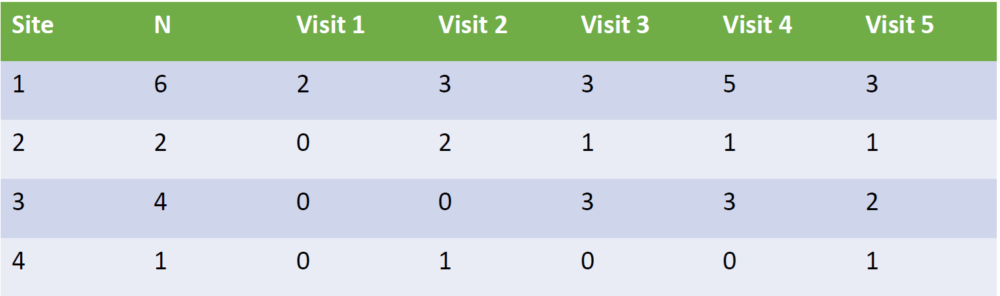
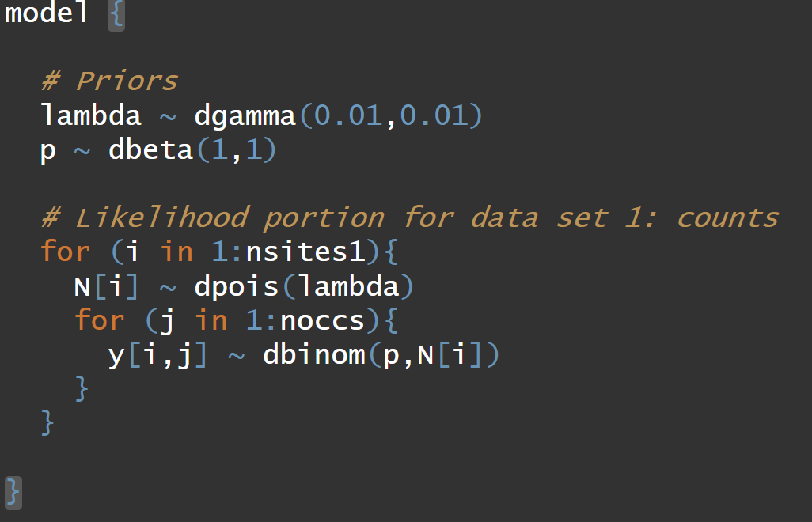
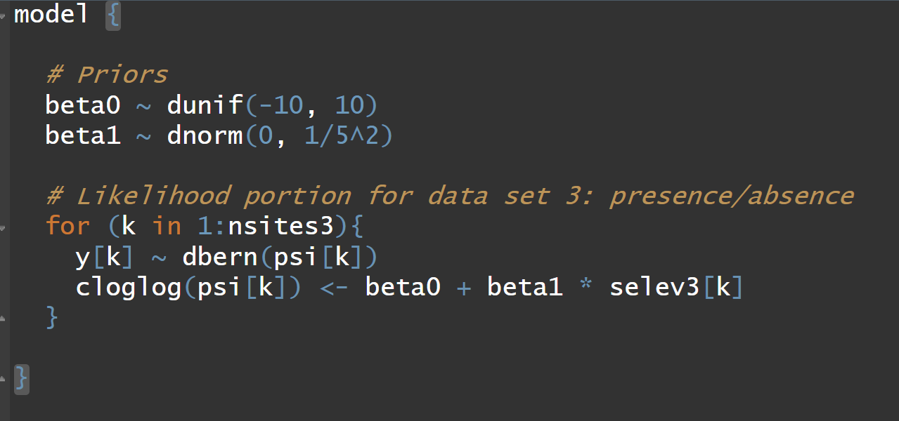
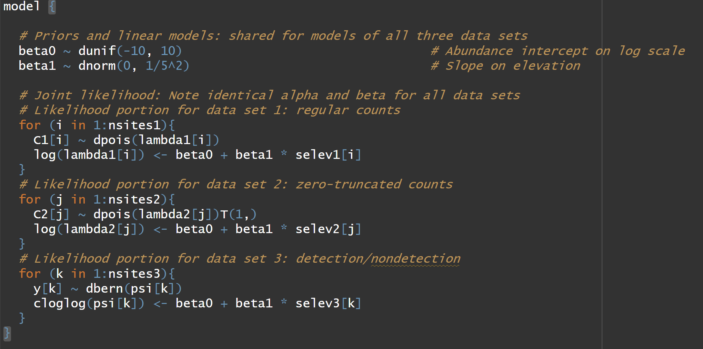

[1] 0.8646647N-Mixture Model and More
Objectives
- N-mixture model
- Occurrence Probability and Abundance
- Integrated Data Modeling
A new model
- Royle 2004
- Another way to estimate abundance with imperfect detection
- mark recapture
- removal sampling
- distance sampling
- double observer
N-mixture model
- Fundamentally a ‘count model’ that corrects for detection probability
- “Capture–recapture studies can be difficult to implement” (Royle, 2004)
- Maybe more useful for sparse data (few sites, few occasions, small detection probability, some zeros)
- Data Inputs: Replicated spatial counts
- Abundance: State process is a Poisson distribution
- Detection: Observation process is a Binomial distribution
N-mixture model
\(y_{i,t}\) = number of individuals observed at site \(i=1...R\) during \(t=1...T\) sampling occasions.
\[ \begin{align*} y_{i,t} \sim& \text{Binomial}(N_i, p) \\ N_i \sim& \text{Poisson}(\lambda) \end{align*} \]
- \(N_i\) = size of population at site \(i\)
- \(\sum_{i=1}^R N_i\) = total population size
Priors:
- \(\text{log}(\lambda) \sim \text{Normal}(0,3)\)
- OR, \(\lambda \sim \text{Gamma}(0.01,0.01)\)
- \(\text{logit}(p) \sim \text{Logistic}(0,1)\)
- OR, \(p \sim \text{Beta}(1,1)\)
N Mixture Model
Assumptions:
- Poisson and binomial distributions are true descriptions of state and observation processes; i.e., variation in abundance can be described by the assumed distribution (e.g., Poisson).
Abundance at each site \(i\) is random and independent of abundance at all other sites;
Population is closed among surveys
Observers do not double count individuals
All individuals have the same detection probability or otherwise modeled
Data

N-mixture extensions
\(y_{i,t}\) = number of individuals observed at site \(i=1...R\) during \(t=1...T\) sampling occasions.
\[ \begin{align*} y_{i,t} \sim& \text{Binomial}(N_i, p_{i,t}) \\ N_i \sim& \text{Poisson}(\lambda_i) \end{align*} \]
\[ \begin{align*} \text{logit}(p_{i,t}) =& \beta_0 + \beta_1 \times x_{i,t} \\ \text{log}(\lambda_{i}) =& \alpha_0 + \alpha_1 \times w_{i} + \epsilon_{i} \\ \epsilon_{i} \sim& \text{Normal}(0,\sigma^2) \end{align*} \]
More extensions
Other distributions
- Negative-binomial
- Zero-inflated Poisson
- Multinomial
Integrate known date or distance information
Multiple states, ages, or sexes
Spatial movement, e.g., temporary emigration
Implementation
- Maximum likelihood
- Unmarked pacakge; pcount function
- Bayesian
- ubms package
- JAGS, nimble, INLA, stan
Concerns
Parameter Identifiability: “A model is identifiable if there is only one set of parameter values that result in a single model output”. (Cole book)
Data Identifiability: a condition of the unique dataset that does not allow the model to estimate a unique set of parameters to be output

Concerns
- 2% double counting can lead to ~20% bias
- small unmodelled heterogenity in \(p\) can lead to 20% bias
- small distributional assumption violation leads to CI coverage of 17%
Concerns
- “fundamentally count data under imperfect detection can only be reliably used as indices.” (i.e., relative abundance, not absolute abundance)
… this is because without auxiliary information about \(p\), count data cannot distinguish between an N-mixture model and other possible models (GLM).
Concerns
- Testing concern with 137 bird datasets
- Small sample size caused issues (<267 sites)
- Covariates did not affect identifiabiltiy
- No identifiability issues for Poisson and ZIP distributional assumptions
- 25% of datasets had issues with Negative Binomial distribution
N-mixture model
Go to code….

Occurrence Probability and Expected Abundance
\(\psi\) = probability of occurrence
\(\lambda\) = mean count/abundance
\[ \psi = P(Y=1) \]
\[ \psi = P(Y=1) = P(N>0) \]
\[ \psi = P(Y=1) = P(N>0) = 1 - e^{-\lambda} \]
More to the idea
Starting with:
\[ \psi = 1 - e^{-\lambda} \]
Lets rearrange:
\[ e^{-\lambda} = 1 - \psi \]
\[ \text{log}(e^{-\lambda}) = \text{log}(1 - \psi) \]
\[ -\lambda = \text{log}(1 - \psi) \]
\[ \lambda = -\text{log}(1 - \psi) \]
\[ \text{log}(\lambda) = \text{log}(-\text{log}(1 - \psi)) \]
The right side is called the ‘complimentary log-log link function’.
The end result
\[ \text{log}(\lambda) = \text{log}(-\text{log}(1 - \psi)) \]
OR
\[ \text{log}(-\text{log}(1 - \psi)) = \text{log}(\lambda) \]
OR
\[ \text{cloglog}(\psi) = \text{log}(\lambda) \]
OR
\[ \text{cloglog}(\psi) = \text{log}(\beta_0 + \beta_1 \times x_1) \]
The model all together
\(y_i\) are the presence and absences of the species at site \(i\)…
\[ y_i \sim \text{Bernoulli}(\psi_i) \\ \text{cloglog}(\psi_i) = \beta_0 + \beta_1 \times x_i \]
Presence/Absence Model
Go to code….

Integrated Data Model
- a hierarchical model
separate response variables where at least one parameter is shared among at least 2 response variables
“It just makes sense to use all the information that is available in some estimation task” (Kery and Kellner, 2024)
Integrated Data Model
Names: integrated model, data fusion, data assimilation
specific types:
- integrated population models
- integrated species distribution models
- integrated community model
- integrate dynamic N-mixture model
Integrated Data Model
“datastream specific observation submodels that inform a common ecological model” Gilbert et al. 2021
Integrated Species Distribution Model
In chapter 20 of Kery and Kellner, 2024 they introduce three data sets.
- Counts of swifts (\(y_1\))
- Counts of swifts, but the “lazy” birdwatchers didn’t record the zero counts (\(y_2\))
- Observers recorded whether swifts were present (1) or not (0) (\(y_3\))
Integrated Species Distribution Model
We could fit each separately, but…
Or, could fit a model that leverages all three data sets, each with their own observation model but a single joint ‘process/state’ model.
Integrated Data Model
Sub model 1
\[ \begin{align*} y_{1,i} \sim \text{Poisson}(\lambda) \end{align*} \]
Sub model 2
\[ \begin{align*} y_{2,i} \sim \text{ZT Poisson}(\lambda) \end{align*} \]
Sub model 3
\[ \begin{align*} y_{3,i} \sim \text{Binomial}(\psi) \end{align*} \]
Integrated Data Model
Sub model 1
\[ \begin{align*} y_{1,i} \sim& \text{Poisson}(\lambda_{i}) \\ \text{log}(\lambda_{i}) =& \beta_0 + \beta_1 \times x_i \end{align*} \]
Sub model 2
\[ \begin{align*} y_{2,i} \sim& \text{ZT Poisson}(\lambda_i)\\ \text{log}(\lambda_{i}) =& \beta_0 + \beta_1 \times x_i \end{align*} \]
Sub model 3
\[ \begin{align*} y_{3,i} \sim& \text{Binomial}(\psi_{i})\\ \text{cloglog}(\psi) =& \beta_0 + \beta_1 \times x_i \end{align*} \]
Integrated Data Model
Go to code…
